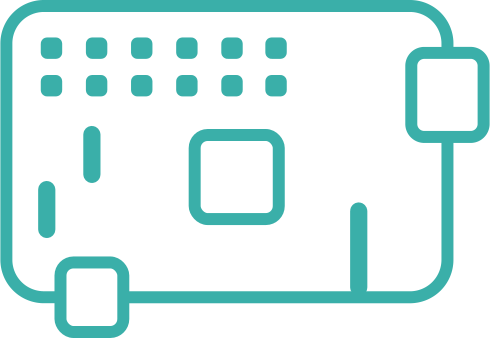

Raspberry
{{ipAddress}}
{{serverStatusText}}
If you are experiencing problems with the connection, please check the following:
- Check whether the entered server IP address is correct.
- Check if your device and server are in the same local network.
- Check if the server is connected to power and working properly.